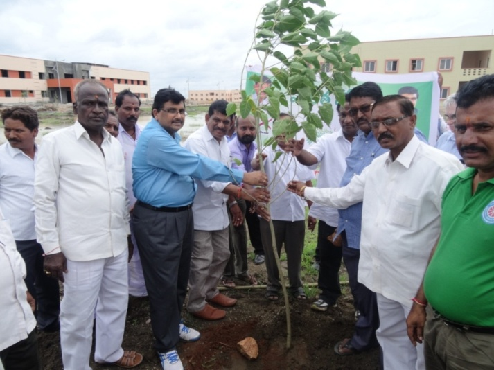

TP Cell
TP Cell
Basar village was adopted by Telangana Information Technology Association (TITA) and RGUKT (Basar) on 17th Dec 2015, under the banner of ‘Digithon’. The aim of this mission is to teach at least one person in every household and make the village Digitally Literate. TITA adopted the “Train-the-trainers” model to accomplish this mission and trained and certified more than 650 RGUKT (Basar) Digithon Certified Trainers (called as ‘Digital leaders’). In this, 200 Digital Leaders were selected for Digital Basar project.
This mission has been successfully completed thus bestowing on Basar village a remarkable achievement of being the “First Digitally Literate Village” in Telangana State.
The University has conducted LEAD INDIA programme for its students. This program is guided by the 10- point oath designed by His Excellency Late Dr. A.P.J. Abdul Kalam, the former President of India. Students who undergo this program set high goals in life and become change agents, not only transforming their lives but also that of their family, society and those they come in contact with. A Lead India National Club (LINC) comprising of around 200 members has formed in RGUKT. Training of LEAD INDIA volunteers is being conducted at RGUKT, Basar for the past three years.
Under the Harita Haram programme, RGUKT has taken active part in the government’s initiative to drastically enhance the green cover of planet earth. During the campaign, RGUKT students, faculty and staff planted over 30000 saplings in the past 3 years. Despite scarcity of water being common in the region almost 95% of the saplings were nurtured and have started to grow. RGUKT plans to undertake this program on a regular basis and keep the idea of green cover for planet earth active.
RGUKT considers it a societal responsibility that it share the knowledge and resources it has with the society. In this regard various academic departments of the University plan outreach programs in which they go to various schools, colleges, villages and towns to participate in academic activities that would benefit the students and villagers from these areas. During the academic year 2016-2017, the Departments of Physics, Mathematics, Chemistry, Telugu,English, Computer Sciences & Engineering, Mechanical Engineering and Electronics & Communication Engineering have all conducted Outreach programs in Basar village as well has nearby schools and colleges. These programs received wide appreciation.
National Service Scheme is an MHRD, Government of India, initiative for the under graduate students of India to link education to community service. As indicated by the motto of NSS which states “Not me, but you,” students are encouraged to actively involve themselves in programs that spread awareness of key concepts like environment, health, hygiene, sanitation, patriotism, service etc. among the people. Students participating in such activities invariably develop stronger and more stable personalities that are tempered by their experience with community service and spreading awareness. RGUKT, Basar, has a very active NSS wing with about 1000 volunteers. The NSS wing at RGUKT, Basar has now extended to rope in the XI and XII class students into this laudable scheme.
Visaka - Vittiya Saksharata Abhiyaan- stands for transforming India towards cashless transactions and a digital economy. It is a campaign by Higher Educational Institutions for digital economy. Under this program, cashless modes of payment like RuPay, USSD, Debit cards, Mobile Wallets, Net Banking, BHIM etc. are focused on and actively canvassed as preferred modes of payment in comparison to cash payments widely prevalent now.
A special awareness program was conducted at RGUKT, Basar on January 4th, 2017. The concept of digital economy and how the University can play a role in the same was highlighted by the Vice Chancellor. As suggested by the campaign Visaka, the aim was to transform the campus into a cashless one with all wages, salaries, vendor purchases and fees for services made cashless.
As a first step, RGUKT, Basar, has successfully made all fee payments totally digital – i.e. online. Payments for all fees and salary/wage disbursement have been made digital using programs and procedures. That are entirely developed in-house.
As a second step, RGUKT is planning to encourage students and student social organizations like NSS to take up social awareness camps. Under this plan, student and other volunteers from the University will be actively canvassing with shop owners, small vendors, employees and even householders and highlighting the benefits of cashless transactions and digital economy.
Some volunteers will also be registering with MHRD as active participants in this movement.
Antahpragnya is a Techfest that is being organized by RGUKT, Basar, since 2015. The event is an opportunity for students to expand their technical horizons and apply the knowledge obtained from books to practical situations. Students participate in the event from colleges all over Telangana and even nearby states of Andhra Pradesh and Maharashtra. The event is also hugely popular with school and college students in the vicinity, who make their way to the event to see, learn, enjoy and encourage.